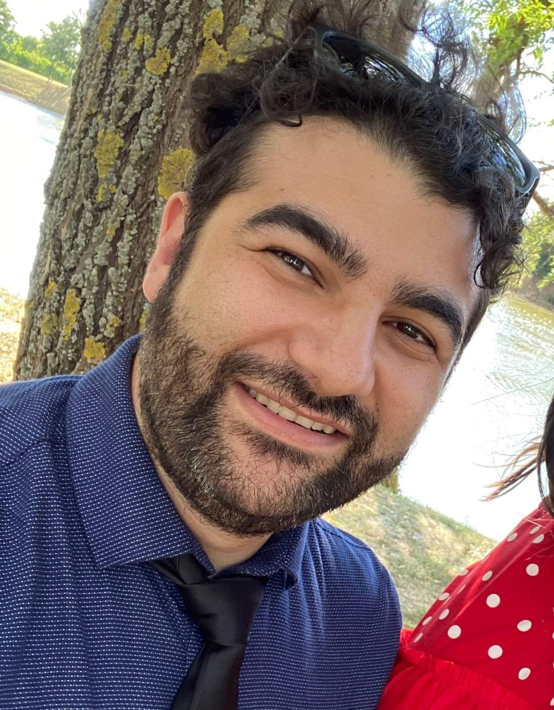

Director · RAISE · CI²
Marco Sanchioni
Associate Professor of Philosophy of Physics
Sophia University Institute
Marco Sanchioni is Associate Professor of Philosophy of Physics at the Sophia University Institute (Figline e Incisa Valdarno, Italy), where he serves as Director of the International Center for Transdisciplinary Studies and coordinates the RAISE Research Unit, of which he chairs the Council Board. He is also a member of the CI² Research Unit. He holds two doctoral degrees — in Theoretical Physics from the Niels Bohr Institute (Copenhagen) and in Philosophy of Physics from the University of Urbino — and has been recognised with the Giulio Giorello Prize and the EPSA Graduate Student Prize.
His research sits at the intersection of quantum mechanics, quantum gravity, and the philosophy of physics. He is particularly interested in relational ontology as a conceptual framework capable of bridging quantum theory and quantum gravity, and in the meta-ontological implications of physical dualities. His work on unsharp properties, POVMs, and relational quantum mechanics engages both the technical and philosophical dimensions of the measurement problem and the nature of physical properties. He has also contributed to formal work in supergravity, Newton-Cartan geometry, and higher-form symmetries.
At ICTS his institutional work extends these concerns to questions of transdisciplinary methodology, responsible artificial intelligence, and the relational character of knowledge across scientific and social domains. His essay "Il ruolo della transdisciplinarità nell'era dell'intelligenza artificiale (generativa)" (Sophia XVII, 2025-1, pp. 69–94) sets out the epistemological position from which the Center works. His research has appeared in journals including Foundations of Physics.